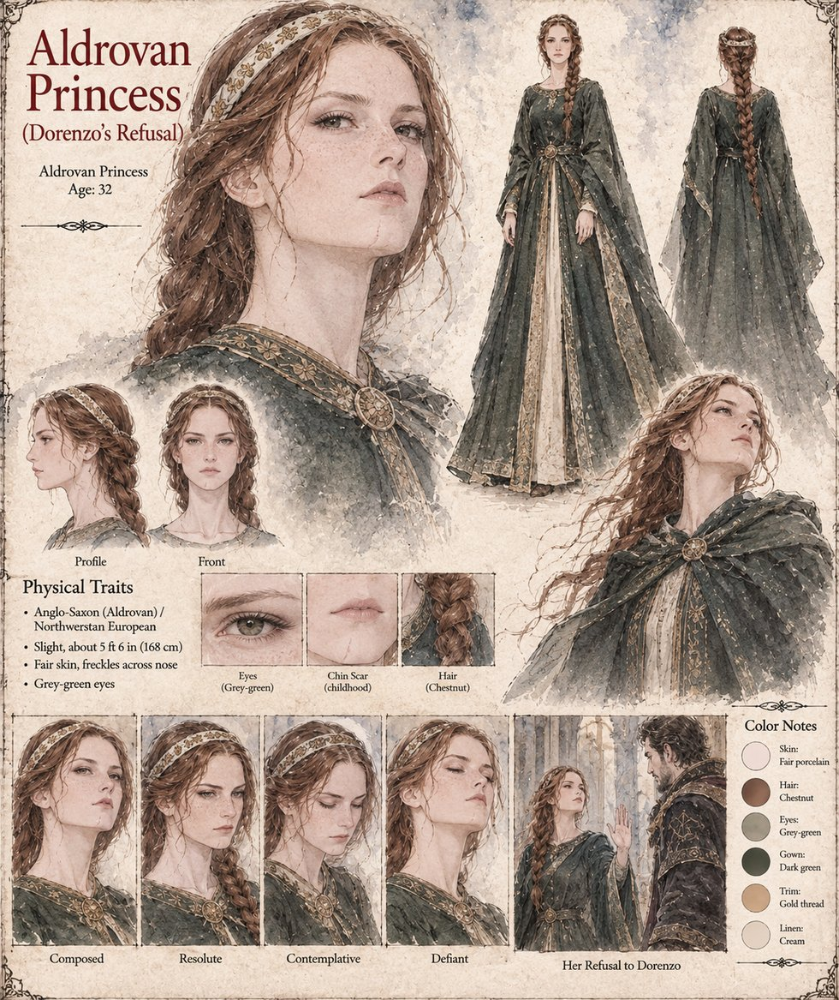

Aldrovan Princess (Dorenzo's Refusal)
Aldrovan princess · refused Dorenzo's proposal · 32 years old
An Aldrovan princess some fifteen years younger than Dorenzo of Solvarre, who proposed marriage to her and was declined, gently and by her own choice. The manuscript never names her and gives her no lines; she exists in the siege chronicle only as what the prince made of her refusal. Over a decade of privately rehearsing it, Dorenzo turned a woman's preference into a refusal by Aldrovan's crown, then wrote to the keepers of the sword asking it to judge between him and a country that had, in his words, owed him and never given, twice. The siege that followed lasted three weeks and cost Solvarre a war it could not afford against an ally it had never needed to provoke.
The sheet gives her age as 32 and draws her slight and composed, about 5'6", with long chestnut hair in a single plait under a flowered band, grey-green eyes, fair freckled skin, a small childhood scar on the chin and a dark green wool gown with gold-thread trim. Its expressions are composed, resolute, contemplative and defiant, and its last panel is her refusal to Dorenzo. The sheet's 32 is the same age the Dorenzo page gives him; the manuscript has her some fifteen years his junior.